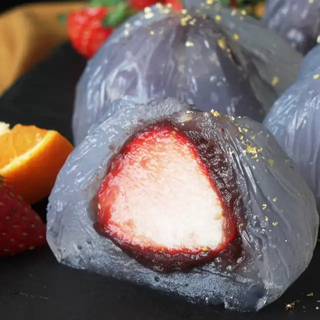

Japanese Water Manju Balls with Fresh Fruit

You have to see to believe these surprising treats stuffed with fruit and sweet bean paste, and topped with gold flakes.
Ingredients
- 3 strawberries hulled
- 3 small tangerines, peeled
- 135 grams Koshian (smooth sweetened adzuki bean paste)
- Gold leaf
- 50 grams potato starch
- 50 grams very fine sugar
- 400 milliliters water
Directions
- Wrap strawberries and tangerines with the smooth adzuki bean paste and roll into a ball.
- In a saucepan, combine potato starch, fine sugar and water and mix well. Heat over low heat for about 3 minutes until the mixture becomes translucent.
- Line a bowl with plastic wrap and slightly wet with water on the inside.
- Pour 1/6 of the starch mixture onto the wrap. Then press the adzuki ball inside. Wrap tightly and secure with rubber band. Submerge the balls in ice water until firm.
- Unwrap the balls and garnish with gold leaf.